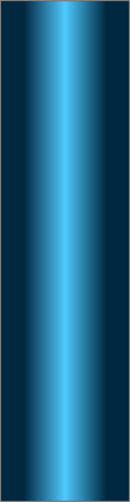
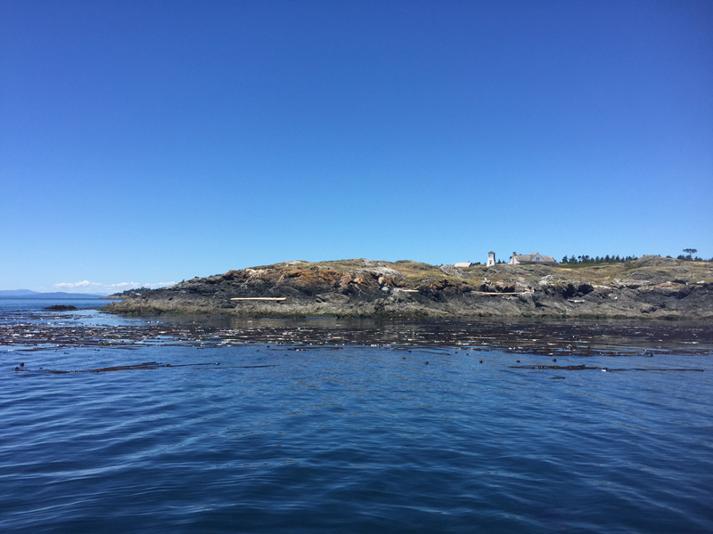
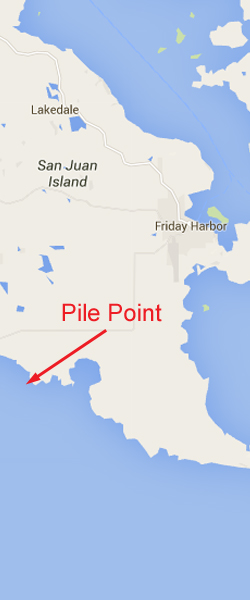
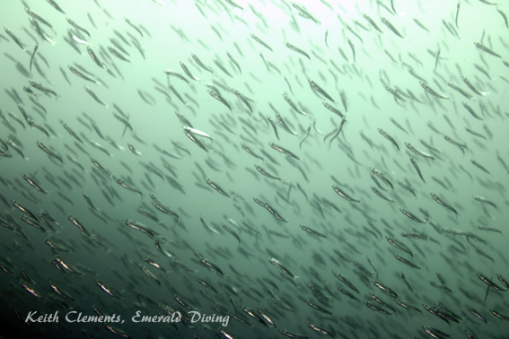
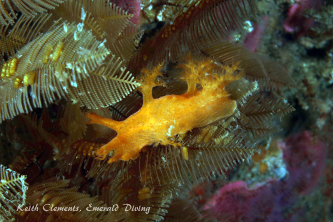
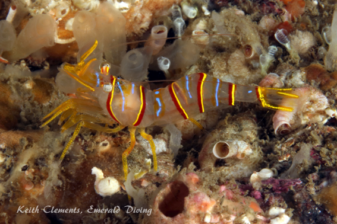
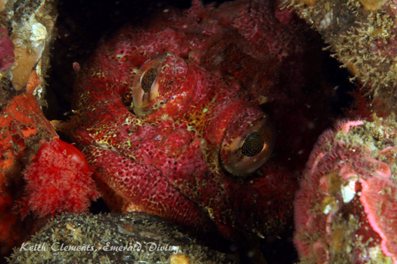
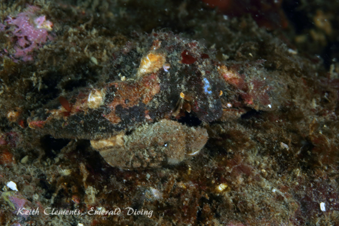

Double click to edit

Pile Point
Topography: Rocky wall and steeply sloping substrate with shelves, small caves, and large boulders.
San Juan Islands marine life rating: 4
San Juan Islands structure rating: 4
Diving depth: 30-100 feet.
Highlight: Dense and colorful invertebrate life encrusting a tall wall.
Skill level: Advanced
GPS coordinates: N48° 28.879’ W123° 05.633’
Access by boat: Pile Point is located at the west entrance of False Bay on south San Juan Island.
Shore access: None.
Dive profile: This is another relatively easy great San Juan dive that can be done as a light drift off-slack on minor exchanges.
I typically enter the water 100 yards west of the point and slowly drift to the east, keeping the wall on my left. The topography consists of rocky walls with ledges, overhands, and small caves along with large boulders strewn about – all of which provide excellent habitat for a plethora of invertebrates to establish a firm foundation. The substrate shallows and flattens out in the east side of the point and is marked by an extensive kelp bed, which is a great place to spend a safety stop at the end of the dive. There is some kelp in the shallows along parts of the wall as well.
Unlike the dive sites in Rosario Strait of the inner islands, south San Juan Island often offers outstanding underwater visibility. Days with +30 feet of visibility are not uncommon.
My preferred gas mix: EAN 34, as I like to spend most of my dive in the 60 to 90 fsw range.
Current observations:
Current Station: Turn Point, Boundary Pass
Noted Slack Corrections: None
This is a great dive that can be done off-slack. What is unusual about this site is the current runs east on a ebbing tide along the point – which is the opposite of what I would expect as the water in the strait is moving west. This is a great dive to hit on the ebb after diving Long Island in the San Juan Channel on the flood.
Boat Launch:
Cornet Bay State Park (Whidbey Island). Approximately 25 miles from the dive site. Excellent facility with bathrooms, docks, camping and general store.
Facilities: None
Hazards:
Current: There is often current at this site, so be comfortable drift diving.
Depth: The wall at Pile Point drops well beyond recreational limits. Good buoyancy and depth management skills are an absolute must.
Exposure: The site is exposed to weather and winds, especially from the west or south. WE target this area when the forecast expects light winds from the north.
Marine life: Although this site is not as overwhelmingly encrusted with marine life as Long Island or San Juan Channel dives, it is a definitely a fun explore and well worth doing many times. There is enough current along this wall to nourish a wide variety of invertebrates and small fish. Most notable are the large red, purple, and green sea urchins which seem to be everywhere. However, beautiful crimson anemones, burrowing sea cucumbers, colorful ascidians, clusters of barnacles, and a variety of hydroids provide a carpet for all sorts of crabs, nudibranch, shrimp, chitons, limpets and fish to flourish. Most noticeable are the large giant white and San Diego dorids, but there are at least 10 species of nudibranch to be found patrolling this site. Caerful observation of the crimson anemones sometimes produces candy stripe shrimp.
Because currents are not hellacious, rockfish are comfortable at this site. Small schools of yellowtail, Puget Sound, quillbacks, coppers, and the occasional black rockfish inhabit this wall. Scalyhead, longfin, and other small sculpins hide amongst the cover, and I occasionally find schooling herring in the shallows.
In the summer months, local Orcas (J pod) will often pass by Pile Point. On one very fortunate day, I was lucky enough to be in the water as they passed and watched in awe as 6 Orcas swam by me – one not more than 6 feet way. You never know what you are going to find diving south San Juan.
San Juan Islands marine life rating: 4
San Juan Islands structure rating: 4
Diving depth: 30-100 feet.
Highlight: Dense and colorful invertebrate life encrusting a tall wall.
Skill level: Advanced
GPS coordinates: N48° 28.879’ W123° 05.633’
Access by boat: Pile Point is located at the west entrance of False Bay on south San Juan Island.
Shore access: None.
Dive profile: This is another relatively easy great San Juan dive that can be done as a light drift off-slack on minor exchanges.
I typically enter the water 100 yards west of the point and slowly drift to the east, keeping the wall on my left. The topography consists of rocky walls with ledges, overhands, and small caves along with large boulders strewn about – all of which provide excellent habitat for a plethora of invertebrates to establish a firm foundation. The substrate shallows and flattens out in the east side of the point and is marked by an extensive kelp bed, which is a great place to spend a safety stop at the end of the dive. There is some kelp in the shallows along parts of the wall as well.
Unlike the dive sites in Rosario Strait of the inner islands, south San Juan Island often offers outstanding underwater visibility. Days with +30 feet of visibility are not uncommon.
My preferred gas mix: EAN 34, as I like to spend most of my dive in the 60 to 90 fsw range.
Current observations:
Current Station: Turn Point, Boundary Pass
Noted Slack Corrections: None
This is a great dive that can be done off-slack. What is unusual about this site is the current runs east on a ebbing tide along the point – which is the opposite of what I would expect as the water in the strait is moving west. This is a great dive to hit on the ebb after diving Long Island in the San Juan Channel on the flood.
Boat Launch:
Cornet Bay State Park (Whidbey Island). Approximately 25 miles from the dive site. Excellent facility with bathrooms, docks, camping and general store.
Facilities: None
Hazards:
Current: There is often current at this site, so be comfortable drift diving.
Depth: The wall at Pile Point drops well beyond recreational limits. Good buoyancy and depth management skills are an absolute must.
Exposure: The site is exposed to weather and winds, especially from the west or south. WE target this area when the forecast expects light winds from the north.
Marine life: Although this site is not as overwhelmingly encrusted with marine life as Long Island or San Juan Channel dives, it is a definitely a fun explore and well worth doing many times. There is enough current along this wall to nourish a wide variety of invertebrates and small fish. Most notable are the large red, purple, and green sea urchins which seem to be everywhere. However, beautiful crimson anemones, burrowing sea cucumbers, colorful ascidians, clusters of barnacles, and a variety of hydroids provide a carpet for all sorts of crabs, nudibranch, shrimp, chitons, limpets and fish to flourish. Most noticeable are the large giant white and San Diego dorids, but there are at least 10 species of nudibranch to be found patrolling this site. Caerful observation of the crimson anemones sometimes produces candy stripe shrimp.
Because currents are not hellacious, rockfish are comfortable at this site. Small schools of yellowtail, Puget Sound, quillbacks, coppers, and the occasional black rockfish inhabit this wall. Scalyhead, longfin, and other small sculpins hide amongst the cover, and I occasionally find schooling herring in the shallows.
In the summer months, local Orcas (J pod) will often pass by Pile Point. On one very fortunate day, I was lucky enough to be in the water as they passed and watched in awe as 6 Orcas swam by me – one not more than 6 feet way. You never know what you are going to find diving south San Juan.






Stubby Nudibranch
Candy Stripe Shrimp
Red Irish Lord
Bering Hermit
Underwater imagery from this site

Butterfly Crab
Schooling Herring